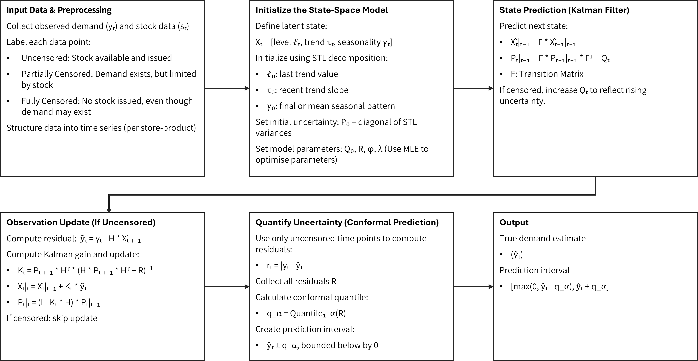
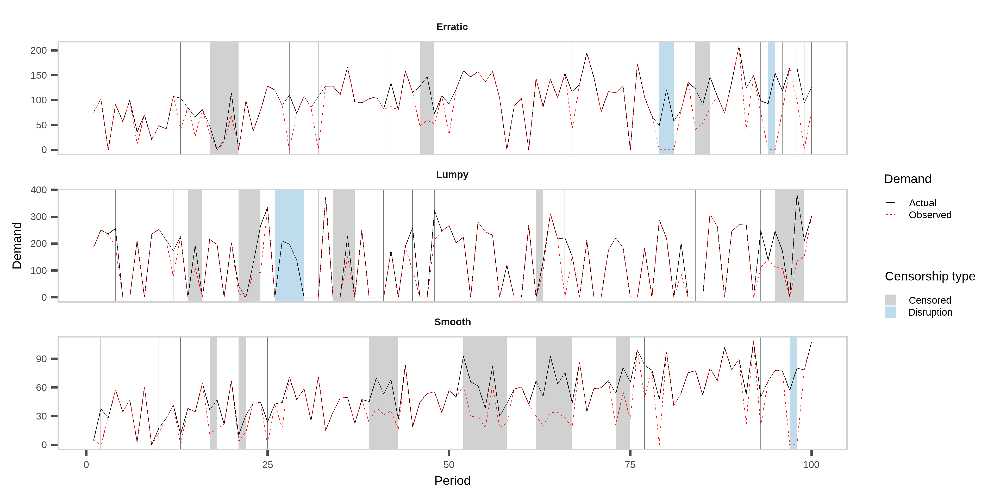

WHAT WAS LOST
Tracing unmet demand in contraceptive supply chains
Harsha Halgamuwe Hewage
Data Lab for Social Good Research Lab, Cardiff University, UK
Supervison team
Prof. Bahman Rostami-Tabar, Prof. Aris Syntetos, Dr. Federico Liberatore
2025-05-20
Image generated using ChatGPT.
Outline
What was never
counted...The fundamental question
What we are going to do
Numerical experiment
What’s
NEXT
What was never counted…
Image generated using ChatGPT.
Seen the UNSEEN

This is Nilu.
She went to the pharmacy today to get contraceptive Product A.
But it wasn’t in stock.
Image generated using ChatGPT.
Seen the UNSEEN
She didn’t go to the pharmacy today.
Why would she?
The last two times she went, they didn’t have the product she needed.
The system doesn’t know this.
It sees “no demand” and it continously logs Nilu’s silence as data.
Image generated using ChatGPT.
Seen the UNSEEN
When data is censored by stockouts or service interruptions…
…forecasts fail.
Not just by being wrong, But by being blind.
This creates a broken trust and leads to
UNMET DEMAND.
Image generated using ChatGPT.
Seen the UNSEEN

In reality…
There are more than
218 million women
like Nilu still have an unmet need for family planning.
Ultimately, this results in dropouts, unwanted pregnancies, and almost 7 million hospitalizations each year in developing countries.
Image generated using ChatGPT.
Sources: USAID, 2020; PATH, 2019; Mukasa et al., 2017; Gilda et al., 2016
Contraceptive products aren’t easily SUBSTITUTED

*Percent of women who will get pregnant within the first year of typical use.
The fundamental question
Key definitions
Stockouts: Periods when demand is higher than available inventory, leading to censored observations of demand.Interruptions: Periods when no products are issued despite available stock, thus artificially recorded as zero demand.Censored Demand: Demand occurring during periods when products are unavailable (stockouts or interruptions), thus not fully observable.True Demand: Actual demand that would have occurred if sufficient stock was available.
Censorship scenarios
How can a demand forecasting and inventory optimization model that incorporates lost sales estimation and contextual field data enhance contraceptive supply chain performance and reduce stockouts in developing countries?
Why this is critical

- Frequent stockouts are common in family planning supply chains, especially in developing countries, significantly impacting public health outcomes.
- During my recent field visit to Ethiopia, stockouts were repeatedly identified by demand planners as a major barrier to effective contraceptive supply management.
- Traditional forecasting methods fail under censorship.
- Prior research inadequately addresses demand estimation under conditions of frequent stockouts and interruptions, often leading to biased forecasts and suboptimal inventory decisions.
Image generated using ChatGPT.
Sources: Bijvank et al., 2011; Karimi et al., 2021; Thanos et as., 2022 ; Trapero, 2024
What we are going to do
How we can fill the gaps
RQ1:How accurately can a Tobit Kalman Filter with conformal prediction estimate true demand under censorship?
RQ2:How does demand reconstruction improve inventory performance compared to baseline planning methods?
RQ3:How do planners adjust their orders in response to proposed model-generated recommendations?
Image generated using ChatGPT.
Our proposed framework
We are currently at the green-colored stage.
First stage: estimating true demand under censorship using tobit kalman filtering and conformal prediction

Numerical experiment
Experiment setup
Data exploration

What did we find?
Actual vs forecasted demand distributions
Overall forecasting and inventory performance across models
| Method | MASE (mean) | Pin Ball Loss - q95 (mean) | CSL (mean) | Lost Sales Rate (mean) | Inventory coverage (mean) |
|---|---|---|---|---|---|
| TKF CP | 0.87 | 47.61 | 0.86 | 0.14 | 5.25 |
| Moving Average | 1.06 | 72.65 | 0.82 | 0.18 | 19.6 |
| Linear Regression | 1.08 | 73.86 | 0.82 | 0.16 | 2.55 |
| Naive | 1.21 | 78.89 | 0.84 | 0.16 | 123.38 |
Performance evaluation - Nemenyi test
Performance evaluation - forecasting
Performance evaluation - inventory
What’s NEXT
Way forward

Develop a more comprehensive inventory policy using forecasted quantiles → Incorporate uncertainty directly into order decisions
Extend empirical model with external covariates → Account for special events, disruptions, and policy shifts
Conduct lab experiment with real demand planners → Measure how model recommendations affect decision-making
Image generated using ChatGPT.
Materials

You can find the slides here.
Any questions or thoughts? üí¨